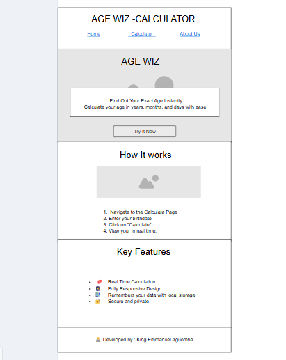

Site Name
Name: Age Wiz
The name was chosen because it's short, easy to remember, and communicates the purpose clearly. A "wizard" for calculating age quickly and accurately.
Site purpose
The purpose of Age Wiz is to provide users with a simple, easy-to-use interface where they can input their birthdate and instantly calculate their current age in years, months and days. It is designed for quick personal use and educational purposes.
Scenarios
- How old am I based on my birthdate?
- Can I use this tool on my phone to calculate someone else's age
Color Schema
These are the main colors used throughout the site:
- Blue(#1e88e5): Used for headings, buttons, and accents.
- Light Gray(#f4f4f9): Used as background color for the entire page to maintain simplicity and readability.
Typography
The site uses the following fonts:
- Heading Font: Open Sans, sans-serif: used for all headings and titles.
- Body Font: Open Sans, sans-serif: used for paragraphs and input text.
Wireframe
Below is a basic wireframe sketch of the home page:
Mobile View
Desktop View
Note: These images should be sketches or designs you create (even hand-drawn), and save as PNGs inside your `project` folder.